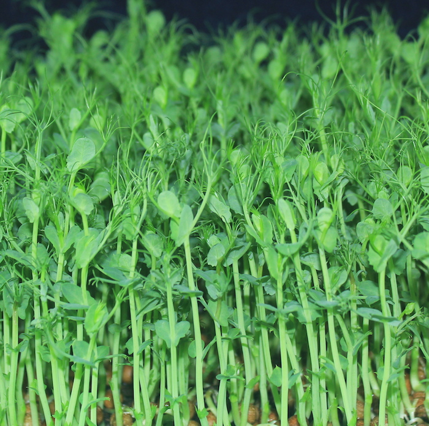
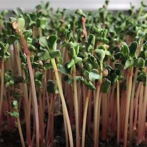
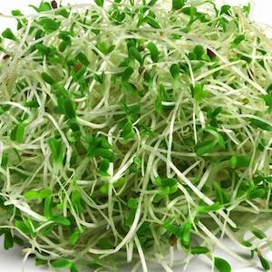
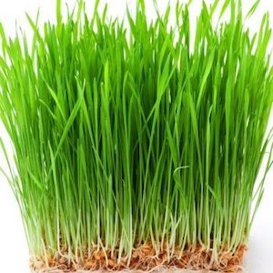
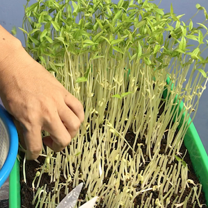
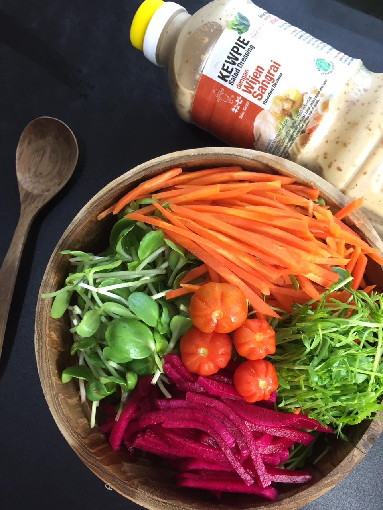
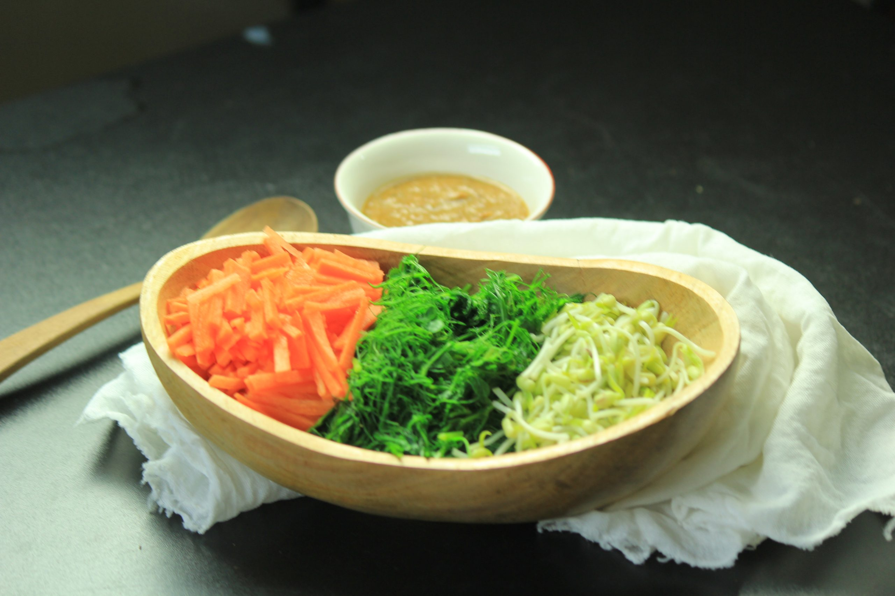
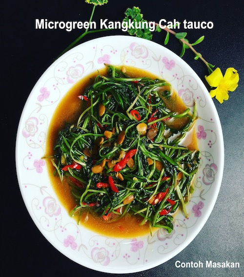
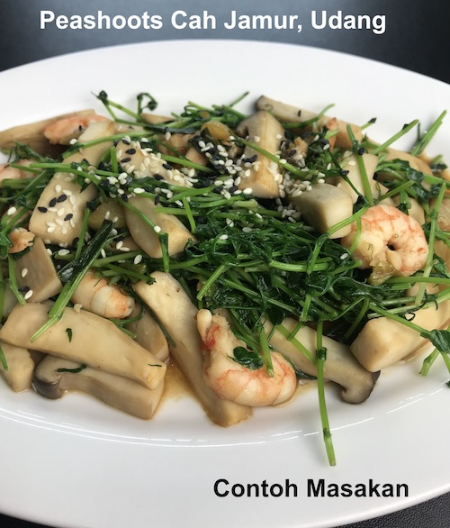

Nutrisi yang padat
Menurut konten situs aslinya, microgreen dikenal memiliki kandungan gizi yang sangat tinggi dan menarik untuk dikonsumsi rutin.
Belajar microgreen dari dasar
Belajar menanam microgreen itu tidak susah, asalkan mendapatkan benih yang bagus. Halaman ini merangkum jenis populer, manfaat, inspirasi masakan, dan akses ke komunitas Gani The Yong.

Mengapa Microgreen
Menurut konten situs aslinya, microgreen dikenal memiliki kandungan gizi yang sangat tinggi dan menarik untuk dikonsumsi rutin.
Dengan media sederhana dan benih yang tepat, pemula pun bisa memulai tanpa proses yang rumit.
Microgreen mudah dimasukkan ke rutinitas masak harian, dari salad sampai tumisan ringan.
Jenis Microgreen
Diambil dari materi visual situs lama, enam jenis ini paling sering dikenalkan untuk pemula karena mudah dikenali, menarik, dan serbaguna.
Tekstur renyah dengan tampilan segar yang cocok untuk hidangan ringan.

Varian yang mudah dikenali dan populer untuk dibudidayakan di rumah.

Memberi warna kontras yang cantik dan terasa segar ketika disajikan.

Pilihan yang akrab untuk pemula dan sering masuk daftar benih populer.

Visualnya padat dan kuat, cocok sebagai penanda kategori microgreen sehat.

Masuk kategori benih yang menarik untuk dieksplorasi di kebun rumahan.

Masakan Berbahan Microgreen
Microgreen bisa ditumis, direbus untuk pecel, atau disajikan menjadi salad yang menyegarkan. Karena itu, gambar utamanya saya jadikan header visual yang lebih panjang agar section ini terasa utuh dan tidak pecah.
“Apa itu Microgreen, apa manfaat dan bagaimana cara menanam, semuanya ada di channel Youtube Gani The Yong.”



Channel Gani The Yong
Benih Microgreen
Setelah proses sprout berjalan baik, cara tanam akan sangat menentukan hasil panen. Karena itu, halaman ini tetap mengarahkan pengunjung ke toko benih resmi Gani The Yong.